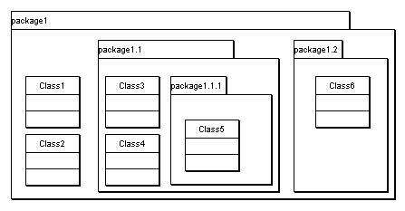

Contents > 8 Defining Custom Design Metrics and Rules > 8.1 Definition of Metrics > 8.1.1 Projection > 8.1.1.6 Filter Attribute "scope"
8.1.1.6 Filter Attribute "scope"
For a detailed analysis of the modularity of a system it is
interesting to take the scope of elements into account. For instance,
any sufficiently large design will usually be organized in a hierarchy
of packages. Dependency relationships or associations between classes
in the same package would appear less critical than links between
classes from different packages.
With the "scope" attribute, you can filter for elements that fulfill a
condition for the scope:
<metric name="SameScope_SupplierClasses" domain="class">
<description>The number of supplier classes of a client
class defined in the same scope.</description>
<projection relation="depclient" target="dependency"
element="depsupplier" eltype="class" scope="same"/>
</metric>
For a given client class, this projection only accesses supplier
classes that are in the same scope as the current class. You can
specify one of the following values for the "scope" attribute:
- same: the projected element is in the exact same scope. In
Figure 35 below, Class1 and Class2 are in the same scope. So are Class3
and Class4.
- other: the projected element is not in the same scope. In
Figure 35 below, this applies to all class pairs except Class1&Class2
and Class3&Class4.
- higher: the projected element is higher in the scope
hierarchy. E.g., for Class3, only Class1 and Class2 are higher in the
scope hierarchy. The same holds for Class4 and Class6. For Class 5,
all classes except Class6 are higher in the hierarchy. Class6 is on a
different branch, hence not higher or lower than Class5.
- lower: the projected element is lower in the scope hierarchy. For
Class3, only Class5 is lower in the hierarchy. For Class1, all classes
except Class2 are lower.
- nothigher: the inverse of "higher". For Class3, the following
classes are not higher in the scope hierarchy: Class4 (because it's in
the same scope), Class5 (because it's lower) and Class6 (because it's
on a different branch).
- notlower: the inverse of "lower". For Class3, all classes but
Class5 are not lower in the scope hierarchy.
- sameorhigher: the projected element is in the same scope or higher
scope. E.g., for class4, that would be Class1, Class2, and Class3.
- sameorlower: the projected element is in the same scope or lower
scope. Again, for Class4, that would be Class3 and Class5.
- samebranch: same or higher or lower scope. For Class1 and Class2,
this includes all classes. For Class3, Class4, and Class5, this
includes all classes but Class6.
- notsamebranch: the inverse of "samebranch". For Class6, this would
be classes Class3, Class4, and Class5. All other class pairs are on
the same branch.

Figure 35: Example package hierarchy
In the above cases, we compared the scope of two elements. There are
four more values we can specify for scope: idem/notidem, and
containedin/notcontainedin. These test if the element for which the
metric is calculated is/is not the scope of the projected element.
For example, we want to define a package coupling metric that counts
the number of stimuli sent to instances of classes in the package,
from instances of classes outside the package (i.e., stimuli that
cross the package boundary).
We assume we have already defined for packages the set "StimRecvSet"
of stimuli received by object instances of classes in the package. We
need to check, for each stimulus in that set, if type of the sender is
a class that is not defined in the current package:
<metric name="StimRecv_ex" domain="package">
<description>The number of stimuli received by object instances
of classes outside the package.</description>
<projection relset="StimRecvSet" target="stimulus"
element="stimsender.objtype.context" scope="notidem" />
</metric>
The element attribute accesses the package of the class of
the instance that sent the stimuli. The scope attribute value
"notidem" only accepts elements that are not identical to the current
element for which the metric is calculated. So we only count stimuli
where the context of the class of the sender is not the current
package - i.e. stimuli sent from outside the package.
To further illustrate the new scope comparisons, consider again the
example package hierarchy in Figure 35. The additional values
for attribute scope are:
- idem: only return elements identical to the element for which
the metric/set is calculated. Using "idem" as scope in metric
"StimRecv_ex" above would count the stimuli sent between instances of
classes of the package. For package1.1 in Figure 35, this would
be stimuli sent within or between instances of Class3 and Class4.
- notidem: only return elements not identical to the element for
which the metric/set is calculated. For package1.1, these are stimuli
sent from Class1, Class2, Class5, and Class6.
- containedin: only returns elements that are identical to or
contained in the element for which the metric/set is calculated.
Using "containedin" as scope in metric "StimRecv_ex" above would count
stimuli sent to instances of classes of the package from instances of
classes of the package, or any of its subpackages. For package1.1,
these are Class3, Class4, and Class5.
- notcontainedin: only return elements that are not contained in the
element for which the metric/set is calculated. Using "notcontainedin"
as scope in metric "StimRecv_ex" above would count stimuli sent to
instances of classes of the package from instances of classes outside
the package and any of its subpackages. For package1.1, these are
stimuli sent from Class1, Class2, and Class6.
Note that in the definition of metric "StimRecv_ex" above, we could
not use the scope value "other" or any of the values explained
previously. To see why, take again the example of package1.1: the
scope of package1.1 is package1, and it is this package1 against which
all comparisons are made! For example, the elements that are in the
same scope as package1.1 are Class1 and Class2.
| Prev |
Up |
Next |
| Section 8.1.1.5 "Filter Attributes "condition" and "targetcondition"" | Contents | Section 8.1.1.7 "Attributes "sum" and "stat"" |